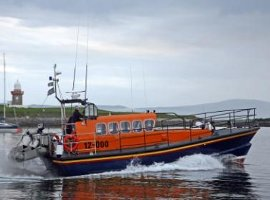
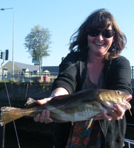

|
The MV Spirit is available for charter all year around. From our new base at Westport Quay, we offer a range of boat tours in and around Clew Bay. Clew Bay is one of the great angling bays in Ireland with many specimen and record fish taken over the years. There are also 365 islands in the inner bay, one for every day of the year, plus the larger islands like Clare and Achill protecting the western approaches. We can offer nature tours, trips to the local islands, fishing trips, team building days out, and can even include a trip to the pub! How about an evenings fishing, overnight on an Island and a days fishing to follow? The MV Spirit is also available for charter as a motherboat for sailing events and offshore surfing partys. Enjoy the Lifeboat Experience without the Crisis. Tour the boat and see how these amazing boats are built for the worst conditions. Explore the website to get a taste of what we can offer. |
  |